Avis Car Rental – Hollywood（安飞士租车好莱坞门店）
选择 1333 North Highland Avenue（北高地大道1333号，门店代码Z9U），不要选酒店大堂门店。10月1日周四17:00关门，目标15:35到店、16:15前完成交车。
Shanghai（上海）→ San Francisco（旧金山）→ Silicon Valley（硅谷）→ Cambria（坎布里亚）→ Los Angeles（洛杉矶）→ Las Vegas（拉斯维加斯）→ New York City（纽约）→ Shanghai（上海）
先完成交通与入住，再安排景点。每天保留一组可删除项目。
租车确定用 Avis（安飞士租车）：9月29日在 San Francisco International Airport（SFO，旧金山国际机场）取车，10月1日在 1333 North Highland Avenue（北高地大道1333号，门店代码Z9U）的 Hollywood（好莱坞）门店还车；10月3日晚在 Kali Restaurant（卡利餐厅）安排米其林一星餐厅；10月6—8日住 Flamingo Las Vegas Hotel & Casino（弗拉明戈拉斯维加斯酒店），10月8—10日住 Fontainebleau Las Vegas（拉斯维加斯枫丹白露酒店）；10月4日只游玩 Disneyland Park（迪士尼乐园主园），购买 1-Day, 1-Park Ticket（单日单园票）。
2026年9月21日按 Booking.com（缤客）有效订单逐笔核对；押金为信用卡预授权，不等于实际消费。
| 住宿 | 订单状态 | 还需要支付 | 入住时准备 |
|---|---|---|---|
| Queen Anne Hotel（安妮女王酒店） 9月29—30日 | 已付 US$243.17 订单原总价 US$261.10，其中 Booking.com（缤客）承担 US$17.93 | 订单未显示强制尾款 | 带同名信用卡；可能做常规杂费预授权。早餐已含。 |
| El Colibri Hotel & Spa（雅黛科乐比酒店及水疗中心） 9月30日—10月1日 | 已付 ¥1,057.29 | 订单未显示强制尾款 | 带同名信用卡；可能做常规杂费预授权。 |
| Loews Hollywood Hotel（洛伊斯好莱坞酒店） 10月1—6日 | 已付 US$1,375.32 | 订单未显示强制尾款；每晚 US$35.40 的 Destination Fee（目的地服务费）已计入并付清 | 可能做杂费预授权。房价不含早餐；不在酒店过夜停车可避免停车费。 |
| Flamingo Las Vegas Hotel & Casino（弗拉明戈拉斯维加斯酒店） 10月6—8日 | 尚未预付 | US$335.72，含房费、税费及两晚 Resort Fee（度假村费），不要重复再加度假村费 | US$150 可退损坏押金预授权；房型到店分配，早餐不含。 |
| Fontainebleau Las Vegas（拉斯维加斯枫丹白露酒店） 10月8—10日 | 外部平台已订 本次提供房款 ¥3,698.25 | 到店另付 ¥835.18；完整住宿费用 ¥4,533.43，已同步费用预算，不重复添加 | 保存外部订单最终价格页；押金金额另向酒店确认，不计入消费。 |
| Executive Hotel Le Soleil New York（纽约勒苏蕾行政酒店） 10月10—13日 | 酒店收款 入住前约2—3天预扣首晚房费及税费 | 订单总价 US$1,310.67；已含每晚 US$28.45 度假村费及每晚 US$3.50 城市税 | US$100/晚杂费预授权，3晚合计 US$300；退房后按银行时间释放。 |
| John F. Kennedy International Airport（JFK，纽约肯尼迪国际机场）附近酒店 10月13—14日 | 外部平台已订 | Booking.com（缤客）账号内无法核对 | 确认房费是否付清、押金、凌晨接驳是否免费及是否需预约。 |
本次明确：枫丹白露到店应付 ¥835.18。弗拉明戈订单 ¥2,248、纽约勒苏蕾订单 ¥8,778 此前有到店／预扣收款安排，最新是否扣款仍需核对；这些房费均已包含在“费用预算”，不是要在总预算外再加一遍。两家此前合计可退预授权额度按预算汇率约 ¥3,015，不计消费；其他酒店可能另有预授权。机场前夜酒店金额待补。
| 日期 | 住宿 | 主安排 | 交通 | 可删除项 |
|---|---|---|---|---|
| 9月29日 | Queen Anne Hotel（安妮女王酒店）已订 | Ferry Building（旧金山渡轮大楼）、California Street Cable Car（加州街缆车）、Golden Gate Bridge（金门大桥） | San Francisco International Airport（SFO，旧金山国际机场）取车 | 按入境与取车进度删减室内逛店、缆车 |
| 9月30日 | El Colibri Hotel & Spa（雅黛科乐比酒店及水疗中心）已订 ¥1,057 | Stanford University（斯坦福大学）、Apple Park Visitor Center（苹果园区游客中心）、Moonstone Beach Boardwalk（月光石海滩木栈道） | US-101（美国101号公路） | Apple Park Visitor Center Roof Terrace（苹果园区游客中心屋顶露台） |
| 10月1日 | Loews Hollywood Hotel（洛伊斯好莱坞酒店）已订 | Boathouse at Hendry's Beach（亨德里海滩船屋餐厅）早午餐、Avis Car Rental – Hollywood（安飞士租车好莱坞门店）还车 | US-101（美国101号公路）+ 网约车 | Hendry's Beach（亨德里海滩）短停 |
| 10月2日 | Loews Hollywood Hotel（洛伊斯好莱坞酒店） | Universal Studios Hollywood（好莱坞环球影城） | Metro B Line（洛杉矶地铁B线） | Universal CityWalk Hollywood（好莱坞环球城市大道）晚餐 |
| 10月3日 | Loews Hollywood Hotel（洛伊斯好莱坞酒店） | Lake Hollywood Park（好莱坞湖公园）、Academy Museum of Motion Pictures（美国电影艺术与科学学院博物馆）、Griffith Observatory（格里菲斯天文台）、Kali Restaurant（卡利餐厅） | 网约车 | Academy Museum of Motion Pictures（美国电影艺术与科学学院博物馆） |
| 10月4日 | Loews Hollywood Hotel（洛伊斯好莱坞酒店） | Disneyland Park（迪士尼乐园主园）单园 | 往返网约车 | Sleeping Beauty Castle（睡美人城堡） |
| 10月5日 | Loews Hollywood Hotel（洛伊斯好莱坞酒店） | Fairfax Avenue（费尔法克斯大道）、Rodeo Drive（罗迪欧大道）、Santa Monica Pier（圣塔莫尼卡码头） | 网约车 | Rodeo Drive（罗迪欧大道） |
| 10月6日 | Flamingo Las Vegas Hotel & Casino（弗拉明戈拉斯维加斯酒店）已订 | 12:10飞 Las Vegas（拉斯维加斯）、Flamingo Wildlife Habitat（弗拉明戈野生动物栖息地）、LINQ Promenade（林克步行街）晚餐、直升机夜景（班次待订） | Southwest Airlines（西南航空）直飞 + 网约车 + 步行 | 酒店附近短逛，全天淡妆 |
| 10月7日 | Flamingo Las Vegas Hotel & Casino（弗拉明戈拉斯维加斯酒店） | Lower Antelope Canyon（下羚羊谷）、Horseshoe Bend（马蹄湾）一日团 | 07:00小团 | 无 |
| 10月8日 | Fontainebleau Las Vegas（拉斯维加斯枫丹白露酒店）已订 | 11:00 Sphere（巨型球）、威尼斯人、换酒店、18:30《O》 | 网约车 + 步行 | 威尼斯人购物、百乐宫花园 |
| 10月9日 | Fontainebleau Las Vegas（拉斯维加斯枫丹白露酒店） | 艺术区、北奥特莱斯、酒店休息 | 网约车 | 射击替换艺术区；时尚秀商场替换奥特莱斯 |
| 10月10日 | Executive Hotel Le Soleil New York（纽约勒苏蕾行政酒店）已订 ¥8,778 | 09:59飞 New York City（纽约），18:12到达 | Delta Air Lines（达美航空）直飞 | 当晚不排景点 |
| 10月11日 | Executive Hotel Le Soleil New York（纽约勒苏蕾行政酒店） | Central Park（中央公园）、The Met（大都会艺术博物馆）、12:45 Casa Mono（卡萨莫诺）已订、Greenwich Village（格林威治村）、《阿拉丁》候选 | 地铁 + 步行 + 网约车 | SoHo（苏豪区）短逛 |
| 10月12日 | Executive Hotel Le Soleil New York（纽约勒苏蕾行政酒店） | The Oculus（世贸中心交通枢纽）、Wall Street（华尔街）、Statue of Liberty（自由女神像）远观、DUMBO（丹波区）、Brooklyn Bridge（布鲁克林大桥）、NBA季前赛 | 地铁 + 两段渡轮 + 步行 | 桥上步行按体力删减 |
| 10月13日 | John F. Kennedy International Airport（纽约肯尼迪国际机场）附近酒店已订 | Fifth Avenue（第五大道）LV行李箱、10:30 Top of the Rock（洛克菲勒观景台）建议票、The High Line（高线公园）、Chelsea Market（切尔西市场），17:00去机场酒店 | 步行 + 地铁 + 出租车 | 观景台尚未购票；Little Island（小岛公园）不叠加 |
| 10月14日 | 返程 | 03:30前到航站楼，06:30起飞 | 酒店接驳 / 出租车 | 无 |
选择 1333 North Highland Avenue（北高地大道1333号，门店代码Z9U），不要选酒店大堂门店。10月1日周四17:00关门，目标15:35到店、16:15前完成交车。
Southwest Airlines（西南航空）12:10—13:20，Hollywood Burbank Airport（BUR，好莱坞伯班克机场）→ Harry Reid International Airport（LAS，哈里·里德国际机场）。两人已报实付人民币2,228元。
Delta Air Lines（达美航空）09:59—18:12，Harry Reid International Airport（LAS，哈里·里德国际机场）→ John F. Kennedy International Airport（JFK，纽约肯尼迪国际机场）。两人已报实付人民币3,088元。
点击分类查看明细
| 类别 | 已确定 | 后续预算 | 预计合计 |
|---|---|---|---|
| 主行程合计 |
主行程小费单列，不重复计入餐饮、车费或团费。可选体验按含小费总额列示。
勾选计入总额；刷新恢复默认。
Ferry Building（旧金山渡轮大楼）→ California Street Cable Car（加州街缆车）→ Golden Gate Bridge（金门大桥）
入境、取行李，搭 AirTrain Blue Line（机场轻轨蓝线）到 Rental Car Center（租车中心）取车；拍车身、轮胎、玻璃与电量。开到 1590 Sutter Street（萨特街1590号）。出关和取车时间不确定，后续节点随实际到达顺延。
Queen Anne Hotel（安妮女王酒店）正常15:00入住；提前只按寄存全部行李、确认停车安排，不假设能进房。落地日只做简单整理。随后网约车到 Ferry Building Marketplace（渡轮大楼市集，1 Ferry Building）钟楼正面下车。
先在 Gott’s Roadside（戈茨汉堡店，店铺#6）柜台点餐；随后在同栋选逛 Dandelion Chocolate（蒲公英巧克力）或 Book Passage（书途书店，海湾侧），最后在钟楼正面拍照。周二 Ferry Plaza Farmers Market（轮渡广场农夫市集）14:00结束，不列入主线。若改吃 Hog Island Oyster Co.（霍格岛生蚝餐厅），预留60—75分钟，并删掉逛店或缆车。
沿 Market Street（市场街）步行约5分钟到 California St & Drumm St（加州街与德拉姆街交叉口）上车，坐到 California St & Powell St（加州街与鲍威尔街交叉口）。单程每人9美元；人站人行道拍坡道，不站轨道。
缆车下车后网约车回酒店取车，再导航 West Bluff 停车场。若15:20仍未离开渡轮大楼，直接删缆车；若16:30仍未从酒店开出，删 Warming Hut Park Store（暖屋公园商店），直接去桥区。
商店地址 983 Marine Drive（海滨大道983号），17:00关门；短看窗景、明信片即可。随后开车至 Golden Gate Bridge Welcome Center（金门大桥游客中心）南侧停车场，不把两个停车场当成同一个。
先看18:00关门的 Welcome Center（游客中心），再步行到 Battery East Vista（东炮台观景台）拍桥。9月29日日落约18:55；主拍摄在18:40前完成。教材接力仅顺路碰运气，不下陡坡寻找。若17:30才到桥区，直接去户外机位。日落后回酒店停车，步行至 HINODEYA Ramen Japantown（日出屋拉面日本城店，1737 Buchanan St）晚餐。
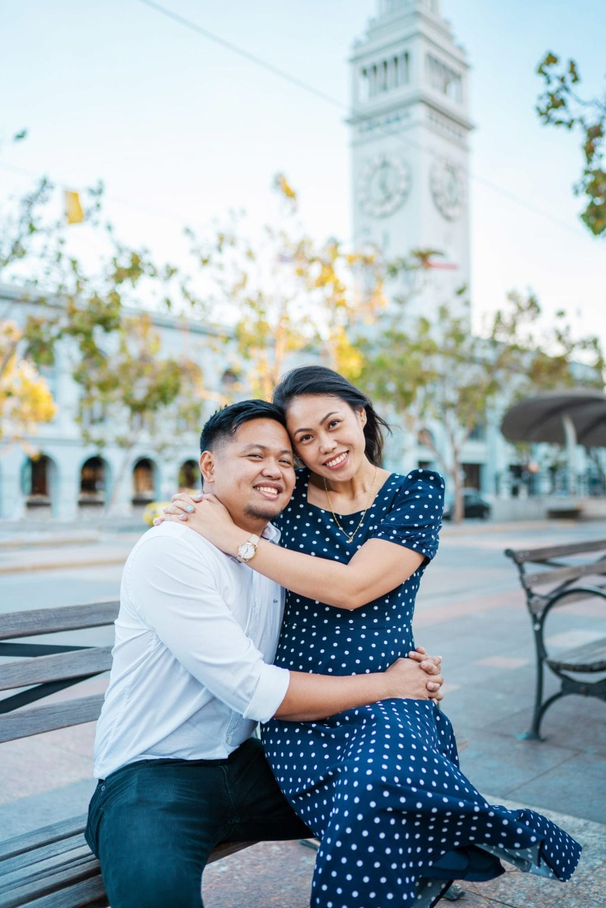
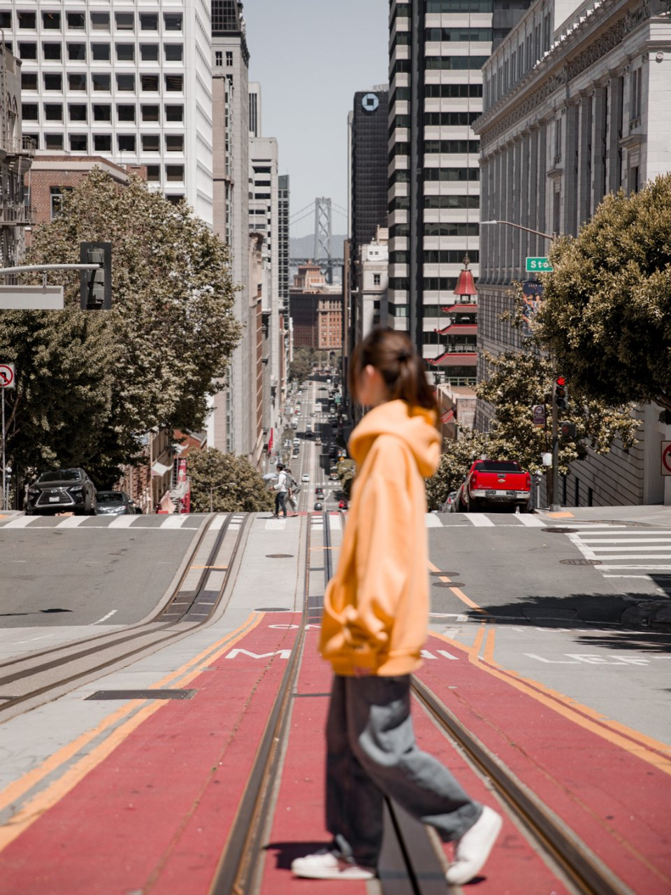
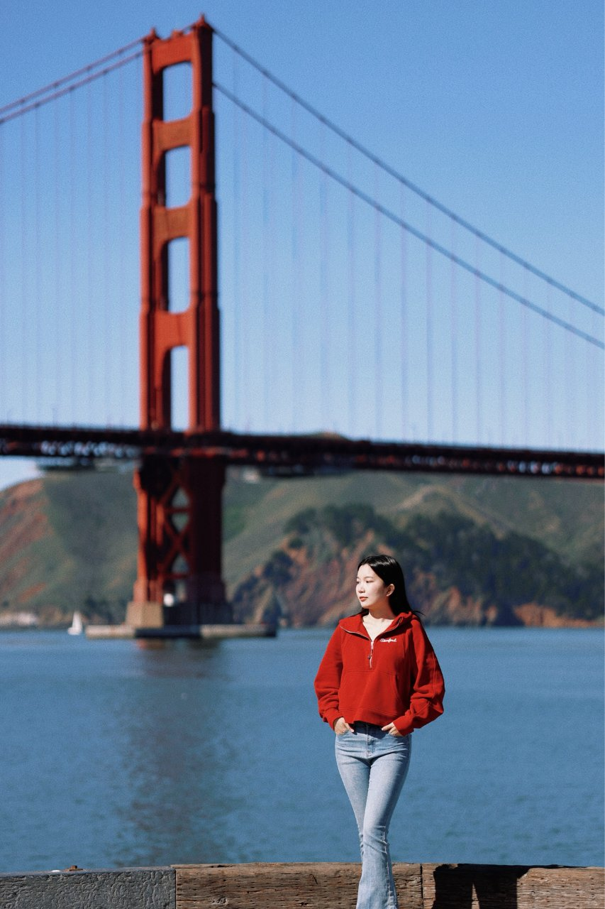
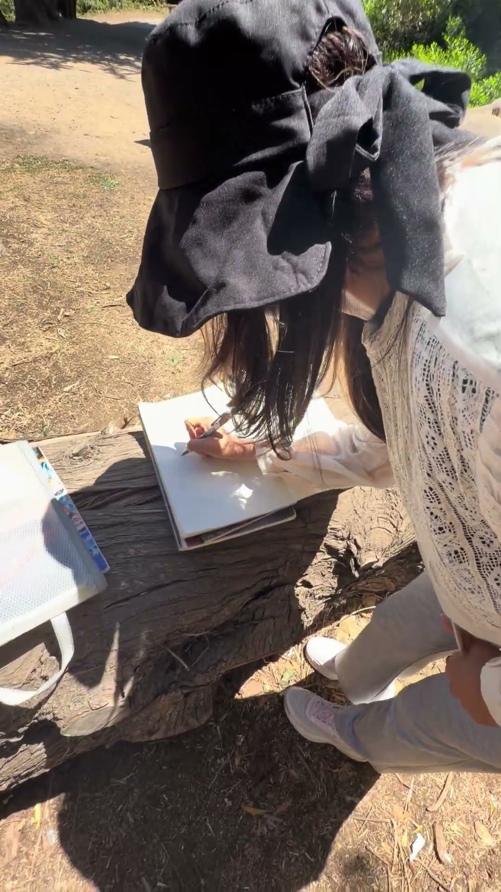
US-101（美国101号公路）为主，不把这天做成 California State Route 1（加州1号公路）自驾游
如要完整化妆，06:00—07:00留出1小时；07:00—07:20吃酒店早餐，07:20—07:45退房装车。若前一晚疲劳，以睡眠优先、妆容简化。护照和电子设备随身，其余行李放封闭后备厢；停车后不当众开箱。
导航 Galvez Lot L-96（加尔韦斯L-96访客停车场，295 Galvez St），约09:00到后用 ParkMobile（停车缴费应用）付访客位。步行 Stanford Visitor Center（斯坦福游客中心）→ Memorial Court（纪念庭院拱廊）→ Main Quad（主方庭）→ Stanford Memorial Church（斯坦福纪念教堂）外观；Hoover Tower（胡佛塔）只远看，不加登塔。
在 855 El Camino Real（埃尔卡米诺雷亚尔路855号）用简餐，约11:25出发，11:55—12:40逛 Apple Park Visitor Center（苹果园区游客中心，10600 N Tantau Ave）模型、屋顶与官方商店。员工园区不对外；只买轻小纪念品。
Google Maps（谷歌地图）当前参考：Apple（苹果游客中心）至 Target Paso Robles（帕索罗布尔斯塔吉特，2305 Theatre Dr）约2小时36分/167英里，再至酒店约32分钟/27英里；另加20—45分钟休息或补能及路况余量。若实际拿到 Tesla（特斯拉），改到 Tesla Supercharger Golden Hills Plaza（黄金山广场特斯拉超充，2421—2445 Golden Hill Rd）按车载导航补能；不能把20分钟购物停留当充电。非电动车可在 Target（塔吉特）补水、洗手间后继续。
先入住放箱，从酒店附近的木栈道南端步行一段再原路返；9月30日日落约18:49，18:35前完成主要人像。酒店官网称有免费 Tesla（特斯拉）充电位，空位须到店确认。约19:00到 Moonstone Beach Bar & Grill（月光石海滩餐吧）晚餐。
Hendry's Beach（亨德里海滩）→ Avis Car Rental – Hollywood（安飞士租车好莱坞门店）→ Loews Hollywood Hotel（洛伊斯好莱坞酒店）
07:15—07:30从 El Colibri Hotel & Spa（雅黛科乐比酒店及水疗中心）退房出发。Google Maps（谷歌地图）默认最快可能转 CA-154（加州154号山路）；本行程沿 US-101 South（美国101号公路南向），地图加 Gaviota（加维奥塔）途经点。当前参考纯驾驶约2小时20分，另留交通余量。全部行李放封闭后备厢，贵重物随身。
导航 2981 Cliff Drive（克利夫路2981号）的公共停车场，直接去 Boathouse at Hendry's Beach（亨德里海滩船屋餐厅）登记 first available（最先可用座位）。等位期间只在餐厅旁海滩入口与小坡拍10—15分钟；不进 Santa Barbara Downtown（圣塔芭芭拉市中心）购物。
餐厅不接受常规线上预订，按现场候位；10:50仍未入座则改简餐或车上备食，不等第一排海景座。此时可能仍是早餐菜单，按当天菜单点餐。目标11:30离开，12:00为硬截止。
沿 US-101 South（美国101号公路南向）直达。Google Maps（谷歌地图）当前畅通参考约1小时38分/93英里；为工作日下午拥堵另留60—90分钟及还车前补能/加油时间。15:00查看预计到达时间，若接近16:30便不再停靠。不要把17:00关门当到店时间。
还车点是 1333 North Highland Avenue（北高地大道1333号），周四08:00—17:00营业；目标16:15前拍车身、电量/油量并交钥匙，取得收据。带箱从门店叫车到酒店正门 1755 North Highland Avenue（北高地大道1755号），约1.3公里，不拖箱走。入住后休息；晚餐优先酒店连通的 Ovation Hollywood（好莱坞奥维申商场）2层 The Win~Dow Hollywood（温多好莱坞汉堡店），官网营业至21:00；想坐下吃可改酒店内 H2 Kitchen & Bar（H2厨房酒吧），账单已加20%服务费时不用重复给小费。

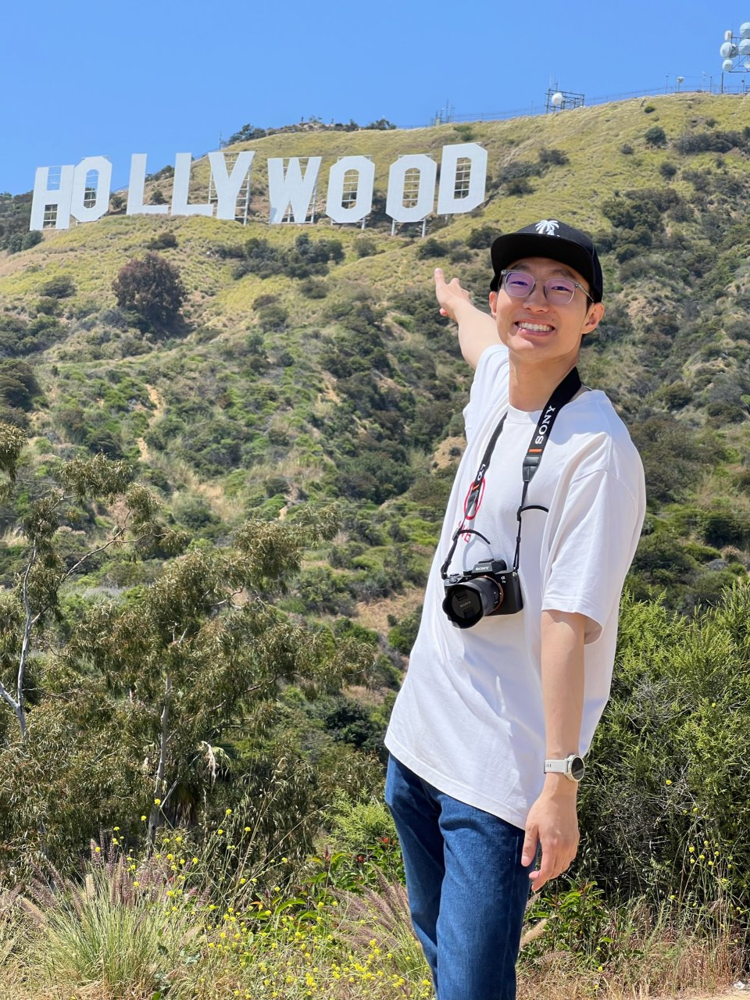
Metro B Line（洛杉矶地铁B线）一站 + Universal Studios Shuttle（环球影城免费接驳车），不租车
按完整60分钟预留，以持妆、防晒和方便补妆为主；不使用容易被水上项目影响的复杂造型。
步行到 Hollywood / Highland Station（好莱坞/高地站），乘 Metro B Line（洛杉矶地铁B线）一站到 Universal City / Studio City Station（环球城/影城城站），依标识坐 Universal Studios Shuttle（环球影城免费上山接驳车）。基础票价每人1.75美元。先拍 Universal Globe（环球影城地球仪），随后排安检；普通入园时刻以前一晚官方日历和当天应用为准。
先下长扶梯到任天堂区：入口及园内上层拍照 → Mario Kart: Bowser's Challenge（马力欧赛车：库巴的挑战）→ 1-UP Factory（1-UP工厂商店）看轻小纪念品。随后在 Jurassic World – The Ride（侏罗纪世界）/ Transformers: The Ride-3D（变形金刚3D）/ Revenge of the Mummy（木乃伊复仇）中只选1项。若普通票10:00才入园或排队过长，删掉这项，不多次上下园。
回上园做 Studio Tour（影城之旅），连同候位留75—90分钟；随后在 The Three Broomsticks（三把扫帚餐厅）柜台午餐，留45—60分钟。队列超过25分钟则改上园其他简餐，不为吃饭折返下园。入园较晚时，这两个节点整体顺延。
Hogwarts Castle（霍格沃茨城堡）外立面拍照 → Harry Potter and the Forbidden Journey（哈利·波特与禁忌之旅）→ Honeydukes（蜂蜜公爵糖果店）短逛。WaterWorld（水世界）仅在官方应用有合适场次且不挤掉核心项目时看，想保持干爽选非湿区。15:30仍未做影城之旅，先去影城之旅并删水世界。
按当天普通票允许时间出闸，园外地球仪可补一组照片；在城市大道短逛。晚餐选 The Habit Burger Grill（哈比特汉堡，环球城市大道店）柜台简餐，店方公布周五营业至23:00，或直接回酒店周边吃。返程坐免费接驳车与地铁B线；若停运或疲劳，从官方指定网约车区叫车。
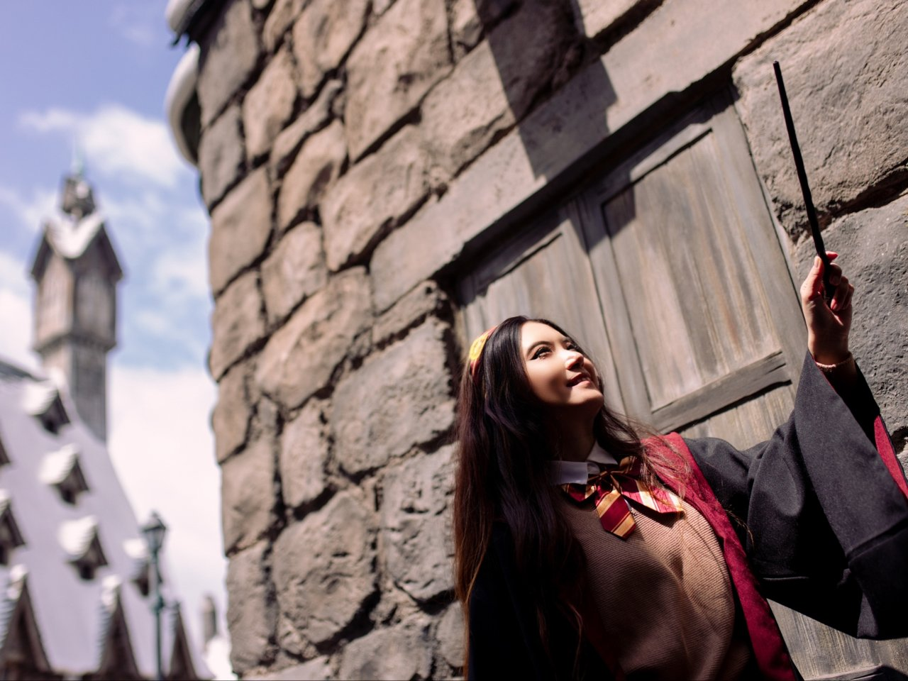
Lake Hollywood Park（好莱坞湖公园）→ The Original Farmers Market（始祖农夫市集）→ Academy Museum of Motion Pictures（美国电影艺术与科学学院博物馆）→ Griffith Observatory（格里菲斯天文台）→ Kali Restaurant（卡利餐厅）
当天有白天人像、日落和米其林晚餐，统一完成妆发；08:15收尾，08:30出发。
从酒店叫车到 3160 Canyon Lake Drive（峡谷湖路3160号）公园一侧合法下车点，约08:50开始拍 Hollywood Sign（好莱坞标志）。人物站草坪北侧，摄影者靠道路内侧用2倍焦距；09:30叫车离开，不走居民区陡坡找机位。
从 6333 West 3rd Street（西第三街6333号）主入口进。先看旧招牌与摊位，在 Bob’s Coffee & Doughnuts（鲍勃咖啡与甜甜圈）补早餐；Magee’s House of Nuts（马吉坚果铺）或 Sticker Planet（贴纸星球）只选1家看轻小礼物。约11:00在 Pampas Grill（潘帕斯巴西烤肉）午餐，若该店尚未开餐，改市场内已营业摊位。The Grove（格罗夫购物中心）只在有余量时短逛。
从市场第三街主入口叫车到 6067 Wilshire Boulevard（威尔希尔大道6067号）正门。看电影服装、道具与 Dolby Family Terrace（杜比家庭露台），顺路在 Academy Museum Store（学院博物馆商店）看电影周边。普通票每人25美元；Oscars Experience（奥斯卡体验）另购票。14:30才到则不买票，直接删除进馆段。
博物馆片区留饮水和休息时间，再叫车上山，在天文台官方标识的网约车区域下车。目标16:15前到；15:00仍未离开博物馆片区，就删博物馆余下内容。到得晚先看外部，不临时买天象厅票。
先看室内展厅并休息，18:00前到外部栏杆机位。官方10月3日日落约18:34；想赶19:45晚餐，日落拍完即去网约车区，18:40前发起叫车、18:45目标上车，不把蓝调夜景排为保证项目。
地址 5722 Melrose Avenue（梅尔罗斯大道5722号），只在 Resy（订位平台）实际订到19:45后按此执行。下山等待加车程留约60分钟；18:55仍未匹配到车，立即给餐厅电话报预计抵达时间。两人共享牛排、蔬菜或蘑菇配菜与招牌蛋白霜冰淇淋，含税两人预算¥1,380—1,620，另留小费¥220—280。饭后叫车回酒店，次日05:00起床。
西侧热门项目 → 午间休息 → Fantasyland（幻想世界）与 Tomorrowland（明日世界）→ 夜间表演
前一晚 Kali Restaurant（卡利餐厅）后直接回酒店，先洗头并备好衣服、包和常温早餐；05:00起床实际睡眠可能只有约6小时。早晨妆发以防晒、持妆为主。若明显疲劳，改07:00出发，删加选项目，不为开园冲刺牺牲安全和体力。
从酒店正门 1755 North Highland Avenue（北高地大道1755号）叫车，目的地设 Disneyland Resort Harbor Boulevard Guest Drop-Off / Transportation Plaza（迪士尼度假区海港大道旅客接送区，1559 South Harbor Boulevard），不设停车楼。路上约45—75分钟只是畅通参考；07:20左右下车，按标识步行至安检和主园入口。
两张票及主题公园预约都须对应10月4日 Disneyland Park（迪士尼乐园主园）。两人各购买一份 Lightning Lane Multi Pass（闪电通道多项目通票）；扫票入园后先看 Haunted Mansion Holiday（幽灵公馆节日版）的可预约时间。每次核销当前预约，或自预约起满2小时，才可约下一项，以应用显示为准。
先去 Star Wars: Rise of the Resistance（星球大战：抵抗组织崛起）普通队列，出项目后在 Millennium Falcon（千年隼）外拍照。若 Ronto Roasters（朗托烤肉店）已供应且有合适 Mobile Order（手机点餐）取餐时段，就在离开星战区前吃早午餐；否则先继续西侧项目，不折回。星战项目停运超过约15分钟就按鬼屋预约走，不在入口等。
按预约窗口玩 Haunted Mansion Holiday（幽灵公馆节日版），再顺路 Pirates of the Caribbean（加勒比海盗）和 Big Thunder Mountain Railroad（巨雷山铁路）。若星战区未吃午餐，11:30左右在 Hungry Bear Barbecue Jamboree（饿熊烧烤餐厅）手机点餐；不为卷饼折回星战区。每次用完预约立刻看下一项。Indiana Jones Adventure（印第安纳琼斯冒险）和 Mad Tea Party（疯狂茶杯）当前日历列暂停开放，不排入主线。
Sleeping Beauty Castle（睡美人城堡）侧桥先拍一组 → “it’s a small world”（小小世界）→ Mickey & Minnie’s Runaway Railway（米奇与米妮的失控铁路），项目按队列选，不追全刷。留45—60分钟坐下休息。若14:00前只完成两项，删小小世界等支线，保证午后休息。
按 Multi Pass（多项目闪电通道）窗口玩 Space Mountain（太空山），Buzz Lightyear Astro Blasters（巴斯光年星际历险）只在队列短时加。顺路看 The Star Trader（星际贸易商店）轻小星战周边，不买笨重玩具。17:45在 Plaza Inn（广场餐厅）点普通柜台晚餐；别误选角色早餐或观演套餐。
在 Main Street, U.S.A.（美国大街）米奇南瓜与 Sleeping Beauty Castle（睡美人城堡）侧桥拍照。此前官方日历显示主园08:00—22:00、约21:30 Halloween Screams（万圣节尖叫）烟花；前晚用应用再核对，烟花可能因风取消。20:45左右依工作人员指引找合法观看位置；Fantasmic!（幻想奇观）若当天未列就不追。20:30已明显疲劳可直接离园。看完演出从 Harbor Boulevard（海港大道）指定网约车区上车，不在路边找司机；散场后到酒店约23:00—00:00，以实时路况为准。
由东向西，日落结束
当天重点是城市街拍和海边日落；09:15结束，09:45出门，10:15吃早午餐。
酒店正门叫车至 624 South La Brea Avenue（南拉布雷亚大道624号），10:15—11:15吃早午餐。咖啡烘焙区周一08:00—14:00；若排队超过25分钟，柜台带走主食，不挤掉后面的店铺时间。
从餐厅沿 South La Brea Avenue（南拉布雷亚大道）向北步行约12—15分钟，到 Stüssy Los Angeles（斯图西洛杉矶店，112号）11:30—12:15看衣服；在路口按信号过街到 Undefeated LA Brea（不败拉布雷亚店，111号）12:15—12:45看球鞋和配饰。两店周一均11:00—19:00。若首店排队超25分钟，只进一家；13:00前叫车离开。
从 Undefeated（不败店）叫车至 9500 Wilshire Boulevard（威尔希尔大道9500号）外合法下车点。看 Beverly Wilshire Hotel（比弗利威尔希尔酒店）外观，过街到 Two Rodeo Drive / Via Rodeo（双罗迪欧步行街），沿 Rodeo Drive（罗迪欧大道）向北走到 Brighton Way（布莱顿路）再叫车。只拍照和补饮品，购物兴趣低时删掉。
从比弗利山庄叫车到 Santa Monica Pier Rideshare Drop-Off（圣塔莫尼卡码头网约车接送区，1550 Appian Way），车程按实时路况另留30—60分钟。上码头拍 Route 66 End of the Trail Sign（66号公路终点牌）和 Pacific Wheel（太平洋摩天轮）；拍完直接向 Ocean Avenue（海洋大道）方向步行，不背着大购物袋在沙滩放置。
步行到 1515 Ocean Avenue（海洋大道1515号），周一官网12:00—22:00；16:00—18:00优惠时段以当日菜单为准。餐厅不紧贴码头，留步行和点单时间；17:25离席，沿有店铺和照明的 Ocean Avenue（海洋大道）返回码头南侧海滩。
从开放下海滩入口走到干沙区，用2倍焦距把人物与摩天轮同框。10月5日日落约18:33，17:45开始拍金色光线，18:45左右收尾；天暗后沿照明主路回码头或 Ocean Avenue（海洋大道）指定上车处，约18:50—19:10叫车回 Loews Hollywood Hotel（洛伊斯好莱坞酒店），回程估计40—75分钟，以当晚应用为准。
Hollywood Burbank Airport（好莱坞伯班克机场）直飞，入住 Flamingo Las Vegas Hotel & Casino（弗拉明戈拉斯维加斯酒店）
09:10前完成退房并在酒店门口叫车；路上预留25—40分钟，目标10:10前进入航站楼。下车位置按当天登机牌的 Southwest Airlines（西南航空）航站楼标识，不提前假定 A 或 B。
Hollywood Burbank Airport（BUR，好莱坞伯班克机场）→ Harry Reid International Airport（LAS，哈里·里德国际机场）。托运行李按最终票面规则核对。
取箱后查看实际航站楼；若在 Terminal 1（1号航站楼），从行李厅 Door 2（2号门）附近乘电梯到 Level 2（2层），过天桥到停车楼网约车上车点，不在到达层路边等车。打车到酒店的时间取决于当时路况；16:00起入住，提前抵达先寄存行李。机场官方上车指引
全天淡妆，补妆约10分钟。房间未准备好时寄存行李，带随身包去吃饭；Flamingo Wildlife Habitat（弗拉明戈野生动物栖息地）只在时间宽裕时短逛。顺路买次日早餐、水和能量棒；酒店附近 Walgreens（沃尔格林药房）3397 South Las Vegas Boulevard（南拉斯维加斯大道3397号）官网标示商店24小时营业，仍以到店信息为准。
从酒店预留10—15分钟步行。Jaburritos（寿司卷饼店，3545 South Las Vegas Boulevard #L12）两人约人民币240—300元；In-N-Out Burger（因安奥汉堡店，同街区 #L24）约人民币160—220元；Haute Doggery（高档热狗店）约人民币180—250元。价格是含税估算，柜台自取小费可选0；三选一，排队超过15分钟换店。若航班或酒店延误，删掉步行街购物，只保留快速用餐。
仅以“19:00从 Maverick Helicopters（马弗里克直升机公司）起飞”为示例：17:20返回酒店指定网约车点，17:30前上车，18:00—18:10到其航站楼 6075 South Las Vegas Boulevard（南拉斯维加斯大道6075号）报到，给交通和手续留余量。官方城市夜飞要求至少提前30分钟报到；实际起飞、接送、报到地址和返程时间都以最终订单为准，不能把别家公司的航站楼混用。航班晚到或直升机接送更早时，压缩晚餐或取消短逛；天气取消则直接回酒店休息，次日07:00有羚羊谷团。
选择从 Paris Las Vegas（巴黎拉斯维加斯酒店）07:00出发的小团
前一晚把衣服、证件、水和常温早餐备好。若前晚直升机按计划结束，不安排04:45起床的一小时完整妆发，优先睡眠；想拍人像就做15—20分钟简妆。穿包脚防滑鞋，车上带薄外套。
若订 MaxTour（马克斯小团），06:10从 Flamingo Las Vegas Hotel & Casino（弗拉明戈拉斯维加斯酒店）出发，沿有照明的主路步行，目标06:30前到；疲劳或天气不适时改叫短途网约车。按最终确认单核对集合点、司机信息和07:00出发时间。
按 MaxTour（马克斯小团）产品页，含下羚羊谷门票、纳瓦霍向导、马蹄湾、午餐和饮水；参考价约每人249美元起，实际包含项目及价格以结账页为准。长途乘车时补觉，Lake Powell（鲍威尔湖）只随团顺路短停，不单列游玩。官网参考约21:30回 Paris Las Vegas（巴黎拉斯维加斯酒店），交通和天气可能影响；预计22:00左右回到弗拉明戈，不再安排夜间逛街。
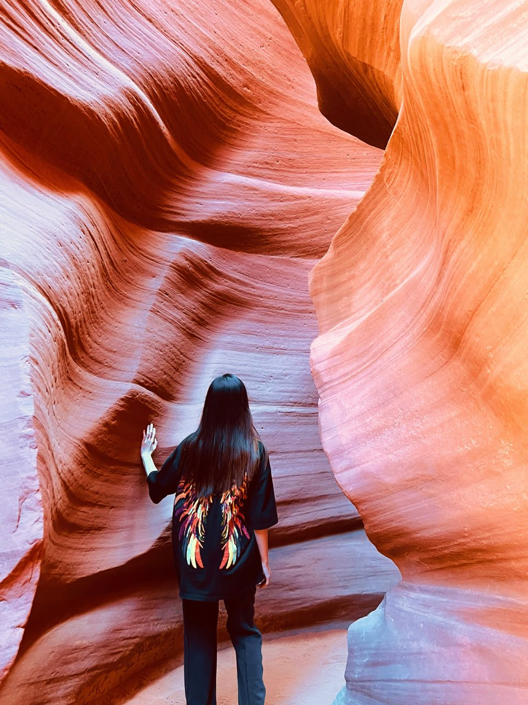
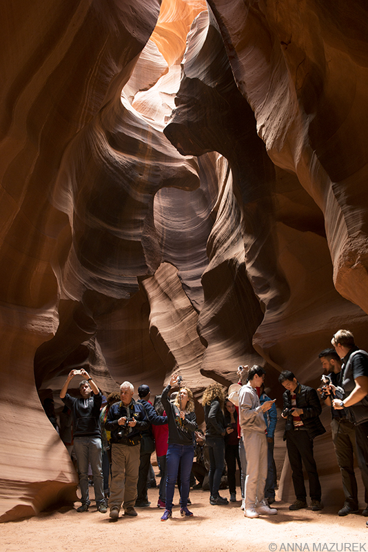
上午看球，午后威尼斯人，下午入住枫丹白露，晚上百乐宫
08:00—09:00化妆，09:00早餐；09:20退房，行李寄存在 Flamingo（弗拉明戈）行李服务台，保留领取凭证。不要带行李去剧场。
09:40从弗拉明戈出发，经 The Venetian Resort Las Vegas（威尼斯人度假村）方向按场馆指引步行，给步行留30—35分钟；10:15前到安检，11:00开场，约12:15结束。若改乘网约车，官方落客点在 Manhattan Street & Westchester Drive（曼哈顿街与韦斯特切斯特街交叉口）。门票已购买：406美元，按6.7计人民币2,720.20元（两人订单总额）；实际日期、时间和座位须核对电子票。官方提前45分钟开门，不允许迟到入场。
散场后沿 Venetian pedestrian bridge（威尼斯人步行连廊）指示进 Grand Canal Shoppes（大运河购物中心）。12:35—13:35在 Grand Lux Cafe（豪华咖啡馆）用餐；候位超过15分钟就改 Retail Level 2（零售二层）的 Chipotle（奇波雷墨西哥简餐）或 Panda Express（熊猫快餐）。吃完最多看一间 Läderach Chocolatier Suisse（莱德瑞巧克力店）或 IT’SUGAR（糖果店），不排队买重糖果。14:00硬截止离开；球体外观拍照只作替换项。
从威尼斯人临 Las Vegas Strip（拉斯维加斯大道）一侧出口向南，经 Harrah’s Las Vegas（哈拉斯拉斯维加斯酒店）和 LINQ（林克街区）回 Flamingo（弗拉明戈），目标15:00前取箱；贵重物品一直随身。再从酒店指定网约车上车点到 Fontainebleau Las Vegas（拉斯维加斯枫丹白露酒店），为等车、交通及前台留余量，不把15:30进房当保证。威尼斯人回弗拉明戈步行路线
枫丹白露官网标准入住时间为15:00起。若到15:45仍未拿到房间，就寄存行李，在酒店休息和简单整理；16:40仍按时出发去百乐宫。若顺利进房，争取至少45分钟坐下休息，不再完整重做妆发。
16:40从 Fontainebleau（枫丹白露）酒店指定网约车上车点叫车；酒店手册标示上车区在停车楼 Valet Level（代客泊车层），以当日应用定位为准。目标17:20左右到百乐宫；有余量才短逛 Conservatory & Botanical Gardens（百乐宫温室花园）、吃小点心。17:45—18:00到《O》剧场入口，按票面要求检票。
门票已付人民币1,805元（票务商购买，票未完整交付，存在无法交票风险）；出发前确认两张有效入场票、最终座位及入场方式。官方演出90分钟、无中场，18:30—约20:00看秀；散场后去百乐宫赌场楼层、Baccarat Bar（百家乐酒吧）附近的 Noodles（面馆），建议订20:15—20:30两人位，具体以餐厅余位为准。晚餐后若体力允许看一轮喷泉，否则直接网约车回枫丹白露；约21:45—22:15回到酒店，不作为保证。当天不安排射击。
Arts District（艺术区）→ Las Vegas North Premium Outlets（拉斯维加斯北奥特莱斯）→ 枫丹白露
想拍街景可留09:00—10:00化妆；不拍照就简单整理，多睡一会儿。早餐与饮水提前备好，10:15左右出发。
打车到 Bungalow Coffee（平房咖啡馆），地址201 E Charleston Blvd（东查尔斯顿大道201号）。喝咖啡后沿有营业商铺的街段短逛；11:00后可看 Alt Rebel（另类叛逆二手服饰店）。只选一两家，不走完整个街区。
打车到875 S Grand Central Pkwy（南中央公园路875号）；先午餐，再看运动服、鞋和日常衣物。带国内价格截图，只买实际有价差的款。15:30左右离开，购物多时直接打车回酒店。
放购物袋、休息，可逛酒店内商店或咖啡店。不安排泳池，不安排必须赶到的演唱会。
在酒店内吃饭，称托运行李、确认次日机票和上车点。20:30后留在酒店，准备10日早晨去机场。
Harry Reid International Airport（哈里·里德国际机场）直飞 John F. Kennedy International Airport（纽约肯尼迪国际机场），晚上只入住与采购
网约车约20—35分钟，目标07:30前进航站楼，距09:59起飞约2小时30分。
Harry Reid International Airport（LAS，哈里·里德国际机场）→ John F. Kennedy International Airport（JFK，纽约肯尼迪国际机场）。
从航站楼乘 AirTrain JFK（肯尼迪机场捷运）到 Jamaica Station（牙买加站），转乘 LIRR（长岛铁路）到 Penn Station（宾夕法尼亚车站）。出站后不拖行李步行，直接乘短途黄色出租车前往 Executive Hotel Le Soleil New York（纽约勒苏蕾行政酒店），地址为38 West 36th Street（西36街38号）。
New York City Subway（纽约地铁）→ 步行 → NYC Ferry（纽约渡轮）→ 步行
当天拍建筑内景、街景和日落；08:15结束，08:20出门。早餐提前买好，08:15前吃完。
酒店步行约6分钟，在 Fifth Avenue & West 34th Street（第五大道与西34街交叉口）拍外观；不登顶，08:35前进地铁。
从34街乘地铁到 Cortlandt Street Station（科特兰街站）。The Oculus（世贸中心交通枢纽）内部拍对称线条，纪念广场保持安静。当天不进 9/11 Museum（九一一纪念博物馆）和 One World Observatory（世贸一号观景台），给自由女神和布鲁克林留出时间。
依次经过 New York Stock Exchange（纽约证券交易所）、Federal Hall（联邦国家纪念堂）、Charging Bull（华尔街铜牛）和 Battery Park（炮台公园）。从 Whitehall Terminal（白厅码头）乘免费的 Staten Island Ferry（史泰登岛渡轮）往返看 Statue of Liberty（自由女神像）；到 St. George Terminal（圣乔治码头）后必须下船，再跟标识重新排队回程。
控制在40分钟；天气冷或排队长时改买简餐，14:10前步行去 Wall Street / Pier 11（华尔街11号码头）。
乘 East River Route（东河航线）到 DUMBO / Fulton Ferry（丹波区富尔顿码头）。依次去 Dumbo – Manhattan Bridge View（丹波区曼哈顿大桥观景点）、Jane's Carousel（简氏旋转木马）和 Pebble Beach（卵石海滩）；16:45—17:15轻食休息；17:30左右从 Brooklyn Bridge Walkway Entrance（布鲁克林大桥步行入口）上桥，步行回 Manhattan（曼哈顿）。19:00前结束过桥。若体力不足，取消走桥，18:45前从丹波区叫车去卡萨莫诺，连等车预留60–75分钟（非实时路况）。
过桥后沿人行道到 City Hall Park（市政厅公园）周边可上车处叫车，连等车预留45–60分钟；备选从 Brooklyn Bridge–City Hall Station（布鲁克林大桥—市政厅站）乘4、5或6线到 14 St–Union Square（14街—联合广场站），再步行约5–10分钟，周末改线看当天公告。
连等车预留30–40分钟，非实时路况；餐厅内等车、核对车牌，酒店正门下车。
餐厅回酒店地图白天步行，晚上 Madison Square Garden（麦迪逊广场花园）
当天从公园拍到比赛，按全天持妆处理；16:45回酒店后只补妆。
地铁到72街，从 Bow Bridge（弓桥）→Bethesda Terrace（贝塞斯达露台）→The Mall（林荫大道）→Gapstow Bridge（加普斯托桥），从东南角出园。
从 Apple Fifth Avenue（苹果第五大道店）向南，经过 The Tiffany Landmark（蒂芙尼地标旗舰店）、St. Patrick's Cathedral（圣帕特里克大教堂）、Rockefeller Center（洛克菲勒中心）和 MoMA Design Store（纽约现代艺术博物馆设计商店）。购物只选两家；想买运动鞋可用 Nike House of Innovation NYC（耐克纽约创新旗舰店）替换。
先看中央车站主大厅，再沿42街向西经过 New York Public Library（纽约公共图书馆）与 Bryant Park（布莱恩特公园），最后到 Times Square（时代广场）红色台阶。全程约2.1公里，可在中央车站到时代广场之间改乘地铁。
从 Times Square（时代广场）步行约12—15分钟回酒店。补妆、确认电子票已经转入官方票务账号或手机钱包；不带大包。
酒店步行约10分钟。19:30森林狼对尼克斯季前赛，18:00离开酒店，18:15左右到场，预留约75分钟。赛后沿第七大道主路步行回酒店。
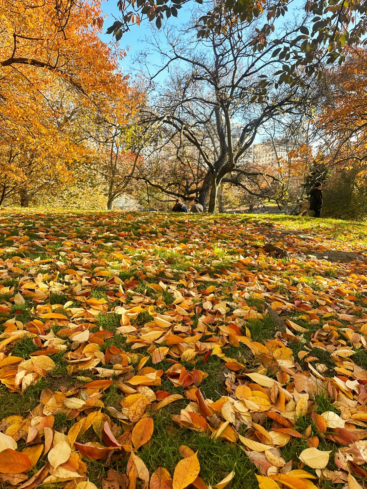
Hudson Yards（哈德逊城市广场）→ The High Line（高线公园）→ Chelsea Market（切尔西市场）→ Little Island（小岛公园）
大箱寄存在 Executive Hotel Le Soleil New York（纽约勒苏蕾行政酒店），护照和贵重物品随身。乘出租车到 Vessel（维塞尔），避免一早乘地铁和绕路。
在 Vessel（维塞尔）外部短拍；若要购物，在 The Shops at Hudson Yards（哈德逊城市广场购物中心）停留不超过30分钟，优先看 Alo Yoga（阿洛瑜伽）、Aritzia（阿里齐亚）或 Lululemon（露露乐蒙）中的一家。随后从高线北端向南单向步行，途中停靠旧铁轨、10th Avenue Square（第十大道广场）和街景观景台。
选择1份主食和1份甜品，不在多家热门摊位重复排队。想买小礼物可逛 Artists & Fleas（艺术家与跳蚤市集），限时20分钟；同时购买次日凌晨可携带的固体早餐，饮料过安检后再买。
从切尔西市场步行约8—12分钟到 Little Island（小岛公园），登高点看 Hudson River（哈德逊河）。之后在 Meatpacking District（肉库区）喝咖啡或短逛；下雨时改为在 Chelsea Market（切尔西市场）和 Whitney Museum of American Art（惠特尼美国艺术博物馆）二选一停留。
16:00开始叫车，目标16:25—16:40回酒店。取行李、使用洗手间并核对机场酒店地址；17:00前再次上车。
直接乘黄色出租车或网约车到机场酒店，不再换乘 LIRR（长岛铁路）和 AirTrain（机场捷运）。工作日晚高峰按75—120分钟并增加30分钟缓冲，预计18:30—19:30入住。
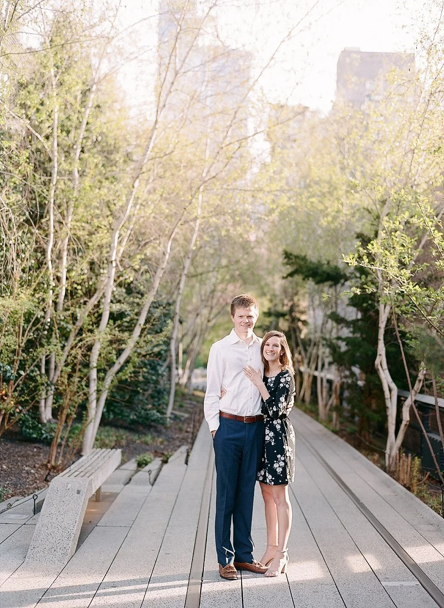
06:30国际航班
机场外酒店按前一晚确认的03:00或03:15接驳；住 TWA Hotel（环球航空酒店）则按出发航站楼使用 AirTrain JFK（肯尼迪机场轻轨）或步行连接。
目标起飞前3小时到航站楼。先确认航站楼，再排队；安检后买水和热饮。
Ferry Building Marketplace（渡轮大楼市集）后乘 California Street Cable Car（加州街缆车），再取车去 Golden Gate Bridge（金门大桥）。当天不绕去 Chase Center（大通中心）。
搭 AirTrain Blue Line（机场轻轨蓝线）到 Rental Car Center（租车中心）。取车时拍四角、轮胎、玻璃与油量。
地址为 1590 Sutter Street（萨特街1590号）。落地日不安排完整化妆，只做洗脸、补水、防晒和头发整理；所有行李进酒店，随后叫网约车去 Ferry Building（旧金山渡轮大楼）。
简餐和短逛；周二的 Ferry Plaza Farmers Market（轮渡广场农夫市集）到14:00，大概率只能逛室内。先在钟楼正面完成单人照，再进室内。
在 California St & Drumm St（加州街与德拉姆街交叉口）上车，坐到 California St & Powell St（加州街与鲍威尔街交叉口）。单程每人9美元；在安全人行道拍上坡构图。
从 California St & Powell St（加州街与鲍威尔街交叉口）叫网约车回 Queen Anne Hotel（安妮女王酒店），再开车前往海边。
拍书店窗框中的大桥并查看中文教材接力。商店17:00关门；若16:40后才到，直接去桥边。
Golden Gate Bridge Welcome Center（金门大桥游客中心）→ 中文教材接力附近 → Battery East Vista（东炮台观景台）。18:55前后日落，19:10离开。
Queen Anne Hotel（安妮女王酒店）房价含欧陆早餐，公开时段约07:00—09:30；07:00吃早餐，07:45退房出发。入住时确认次日时段。
不再比较酒店，只保留入住与交通信息。
地址：1590 Sutter Street（萨特街1590号）。
执行：抵达后先寄存全部行李并停车，再使用网约车前往 Ferry Building（旧金山渡轮大楼）。入住前48小时确认停车入口、约30美元停车费和提前寄存安排。
房价含欧陆早餐，公开时段约07:00—09:30；入住时确认。9月30日07:00早餐，07:45退房开往 Stanford University（斯坦福大学）。
以单人照为主；双人照片只用于判断背景比例和光线，不照搬动作。
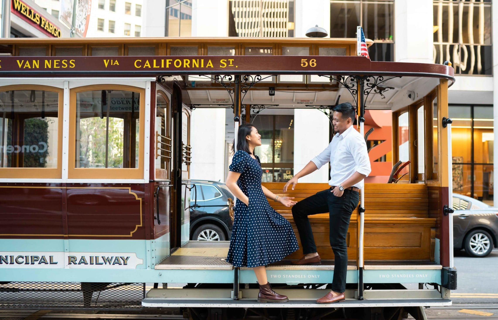
不是 California State Route 1（加州1号公路）自驾游。主线使用 US-101（美国101号公路），海景集中在 Moonstone Beach（月光石海滩）。
避开更晚的通勤车流。导航 Stanford Visitor Center（斯坦福游客中心）。
Main Quad（主方庭）、Memorial Church（纪念教堂）外观、胡佛塔周边。校园可步行参观；建筑开放以当天为准。
公众只能进入游客中心，不可进入员工园区。看模型、商店和屋顶。
在 Cupertino（库比蒂诺）用餐并补水。不要再加 Meta（脸书母公司）或 Google（谷歌）绕行。
15:35左右在 Target Paso Robles（塔吉特帕索罗布尔斯店，2305 Theatre Drive）与 Starbucks（星巴克）休息20分钟。之后直接到酒店。
先到酒店放行李，再短途开车去木栈道。日落后15—20分钟离开。
不走 California State Route 1（加州1号公路）慢线，沿 US-101 South（美国101号公路南向）；导航加 Gaviota（加维奥塔）途经点，避免切到 CA-154（加州154号山路）。
先登记候位，再短走海滩并吃早午餐。10:50仍未入座则改简餐；目标11:30离开，12:00为硬截止。
当前 Google Maps（谷歌地图）畅通参考约1小时38分/93英里，但工作日下午另留60—90分钟及补能余量；15:00查看预计到达时间。
1333 North Highland Avenue（北高地大道1333号，门店代码Z9U）。周四08:00—17:00。完成加油或补能，拍油量或电量、里程与车况，索取结算凭证。
距还车点约1.3公里。带行李叫网约车约5—10分钟，不建议拖箱步行。
门店周四17:00关门；实际目标15:35到、16:15前完成交车。若圣塔芭芭拉出发严重延误，立刻联系租车门店确认处理方式，不能默认下班后交车。
Cookie Crock Market（曲奇克罗克市场），1240 Knollwood Drive（诺尔伍德路1240号），周一至周六约07:00—21:00。9月30日20:15晚餐结束后，若20:30前可到店再短途开车采购；也可在下午帕索罗布尔斯休息时先买好常温早餐和饮水；不要日落后沿公路步行。优先常温食品；需冷藏的食品在入住后购买并及时冷藏。
科技园区以单人与建筑线条为主，海边用走动照和地面纹理。
Loews Hollywood Hotel（洛伊斯好莱坞酒店）适合 Universal Studios Hollywood（好莱坞环球影城）、Griffith Observatory（格里菲斯天文台）与 Hollywood Burbank Airport（好莱坞伯班克机场）。Disneyland Resort（迪士尼度假区）距离较远，但只往返一天。
16:30入住，18:00在 Ovation Hollywood（好莱坞综合体）或酒店附近吃饭。20:30前结束采购，回房休息。
采购：Trader Joe's（乔氏超市），1600 North Vine Street（北藤街1600号），约09:00—21:00；酒店往返用网约车。Ralphs（拉尔夫超市），7257 West Sunset Boulevard（西日落大道7257号），营业至约01:00，仅作为晚到备选。
07:45出发，08:30前到安检；普通入园和关园时间以前一晚官方日历及当天应用为准。优先 Super Nintendo World（超级任天堂世界）、Studio Tour（影城之旅）、The Wizarding World of Harry Potter（哈利·波特的魔法世界）。出园后按体力在 Universal CityWalk Hollywood（好莱坞环球城市大道）晚餐。
酒店步行到 Hollywood / Highland Station（好莱坞/高地站），坐地铁B线至 Universal City / Studio City Station（环球城/影城城站），再转免费接驳车。
08:50 Lake Hollywood Park（好莱坞湖公园）；10:15 The Original Farmers Market（始祖农夫市集）；12:00 Academy Museum of Motion Pictures（美国电影艺术与科学学院博物馆，可删除）；16:15到 Griffith Observatory（格里菲斯天文台）；目标19:45在 Kali Restaurant（卡利餐厅）晚餐，订位尚未确认。
全日用网约车。18:35日落后立即下山，18:40前叫车；次日05:00起床去迪士尼。
常规06:15叫车到 Harbor Boulevard Guest Drop-Off（海港大道旅客接送区），若前夜Kali后疲劳，可07:00出发并删支线。入园先去 Star Wars: Rise of the Resistance（星球大战：抵抗组织崛起），随后西侧到东侧推进；午餐不折回星战区。
9月22日票价快照184美元/人，另选 Multi Pass（多项目闪电通道）；当日营业与烟花以前晚应用为准。散场后同一接送区叫车，约23:00—00:00回酒店。
10:15早午餐后向北步行约12—15分钟，逛 Stüssy Los Angeles（斯图西洛杉矶店）和对面的 Undefeated LA Brea（不败拉布雷亚店）；13:00前离开。Supreme（至上）和 BAPE（猿人头）都不在这条步行段。
Beverly Wilshire（比弗利威尔希尔酒店）外观 → Two Rodeo Drive（双罗迪欧步行街）→ Rodeo Drive（罗迪欧大道）北行；购物兴趣低时删掉。
66号公路终点牌和摩天轮；16:25 Blue Plate Taco（蓝盘墨西哥餐厅）提前晚餐，17:45回码头南侧沙滩拍日落，约19:00叫车回酒店。
09:20 从 Loews Hollywood Hotel（洛伊斯好莱坞酒店）出发；09:50—10:10到 Hollywood Burbank Airport（BUR，好莱坞伯班克机场）；12:10—13:20 Southwest Airlines（西南航空）直飞 Harry Reid International Airport（LAS，哈里·里德国际机场）。小机场与酒店距离短，保留约2小时值机和安检时间。
两人已报实付人民币2,228元，行李与班次以已购机票为准，不再安排备选航班。
10月4日只进入主园。与10月5日相比票价相同，保留原日程更利于10月6日上午去机场。
| 方案 | 每人价格 | 两人价格 | 适用方式 |
|---|---|---|---|
| 仅单日单园票 | 184美元 | 368美元 | 全部普通队列；适合接受只完成6—8个重点项目。 |
| 单园票 + Multi Pass（多项目闪电通道） | 218美元 | 436美元 | Multi Pass（多项目闪电通道）本次加购价34美元/人；这是本行程推荐方案。 |
| 按需增加 Single Pass（单项目闪电通道） | 218美元 + 动态价 | 436美元 + 动态价 | 只在 Star Wars: Rise of the Resistance（星球大战：抵抗组织崛起）队列过长时临时购买。 |
| Premier Pass（尊享通票） | 动态价格 | 动态价格 | 适用项目各走一次闪电通道且不用选择时段；不作为默认方案。 |
10月4日与10月5日的单日单园票均为184美元/人。10月5日主园开放至23:00，比4日多1小时，但没有票价优势；保留10月4日，10月5日继续执行购物与 Santa Monica（圣塔莫尼卡）海边行程。
状态：尚未确认订位。订到19:45后，格里菲斯天文台18:35日落拍完就去上车区，18:40前叫车。
位置：5722 Melrose Avenue（梅尔罗斯大道5722号）。从 Griffith Observatory（格里菲斯天文台）叫车约25—40分钟，另留等车时间；饭后叫车回 Loews Hollywood Hotel（洛伊斯好莱坞酒店）。
点单：两人共享 New York strip（纽约客牛排，12盎司）、Mushroom risotto（蘑菇烩饭）、一份时令蔬菜和 The Original Kali Meringue Gelato（卡利蛋白霜冰淇淋）。两人餐费含税预算¥1,380—1,620，小费另留¥220—280，不点配酒；以点单时菜单为准。
选择原因：加州食材与美国牛排特征明确；路线接在天文台之后，不占用主题乐园日。
每个主要日程保留一个明确的单人机位，先拍全身，再拍半身。
10月6—8日住 Flamingo Las Vegas Hotel & Casino（弗拉明戈拉斯维加斯酒店）；10月8—10日住 Fontainebleau Las Vegas（拉斯维加斯枫丹白露酒店）。两段之间用网约车。
位于 Las Vegas Strip（拉斯维加斯大道）中段，对面是 Caesars Palace（凯撒宫），步行可到 Paris Las Vegas（巴黎拉斯维加斯酒店）、Bellagio Hotel & Casino（百乐宫酒店及赌场）和 LINQ Promenade（林荫大道步行街）。
入住：10月6日16:00起；退房：10月8日11:00前。订单总价 US$335.72 尚未预付，已含两晚 Resort Fee（度假村费）；入住另做 US$150 可退损坏押金预授权。
10月8日行李先寄存在弗拉明戈；看完巨型球、在威尼斯人午餐后取行李，15:30前后到枫丹白露入住休息。10月9日购物休闲，10日早晨退房。
赌场酒店的网约车点可能不在正门，以应用内指定区域为准。
13:20到达，16:00起可入住弗拉明戈；提前到先寄存。全天淡妆，休息并简单补妆。若订19:00的 Maverick Helicopters（马弗里克直升机公司）班次，16:30—17:10在 LINQ Promenade（林克步行街）快餐，两人约人民币160—300元，17:30前从酒店乘车去航站楼。
直升机运营商、班次和接送尚未确定；实际报到地址和时间必须按订单重排。结束后直接回酒店，准备次日早餐和饮水，不再串其他酒店。
前晚返房后优先睡眠，早晨简妆；06:10从 Flamingo Las Vegas Hotel & Casino（弗拉明戈拉斯维加斯酒店）出发，06:30前到 Paris Las Vegas North Door Tour Lobby（巴黎拉斯维加斯酒店北门旅游大堂），07:00出发。官网参考约21:30返回 Paris（巴黎酒店），回房约22:00；实际以确认单及路况为准。
参考价约每人249美元起，按 MaxTour（马克斯小团）页面通常含 Lower Antelope Canyon（下羚羊谷）门票、Navajo（纳瓦霍）向导、Horseshoe Bend（马蹄湾）费用、午餐、水与小团交通；付款页逐项核对。下谷有陡梯；膝盖不适或不愿走陡梯时改 Upper Antelope Canyon（上羚羊谷）。
09:20退房并在弗拉明戈寄存；09:40出发、10:15前到巨型球；11:00看《绿野仙踪》。12:35—13:35威尼斯人午餐，14:00离开，15:00前取箱；随后去枫丹白露办理入住并休息。16:40出发去百乐宫，17:45—18:00到剧场，18:30看《O》，20:15晚餐。
Sphere（巨型球）门票已购买，406美元按6.7计人民币2,720.20元；具体场次和座位以电子票为准。《O》已付人民币1,805元（票务商购买，票未完整交付，存在无法交票风险）。当天不安排射击。威尼斯人购物、球体外拍和百乐宫花园可删，不压缩换酒店、休息和入场时间。
10:30—12:15艺术区咖啡与小店；12:30—15:30北奥特莱斯午餐、购物；16:00回枫丹白露休息；18:00晚餐，20:30前整理好行李。
射击可替换上午艺术区；时尚秀购物中心可替换奥特莱斯。当天不安排巨型球或演唱会。
06:00起床，06:45离开 Fontainebleau Las Vegas（拉斯维加斯枫丹白露酒店），07:10—07:30到 Harry Reid International Airport（LAS，哈里·里德国际机场），09:59—18:12 Delta Air Lines（达美航空）直飞 John F. Kennedy International Airport（JFK，纽约肯尼迪国际机场）。两人已报实付人民币3,088元，托运行李费另计。
到达后乘 AirTrain JFK（肯尼迪机场轻轨）至 Jamaica Station（牙买加站），再乘 LIRR（长岛铁路）到 Penn Station（宾夕法尼亚车站），最后乘短途出租车到 Executive Hotel Le Soleil New York（纽约勒苏蕾行政酒店）。20:30左右入住，不排景点。
| 场地 | 当前公开价格 | 适合点 | 本行程结论 |
|---|---|---|---|
| The Range 702（702射击场） | 官网体验页有89美元起项目；One and Done（单枪体验）79.95美元，Stimulus Package（刺激套餐）149.95美元 | 室内；官网明确列出免费观摩者选项；新手资料完整 | 位于 Spring Valley（春谷）方向，不如 Battlefield Vegas（战场拉斯维加斯射击场）顺路；只有想省到最低或一人射击、一人旁观时再比较 |
| Machine Guns Vegas（拉斯维加斯机枪射击场） | 官网说明入门套餐通常约125美元起；5人以上159美元/人，与两人行程无关 | 室内、可预约酒店接送 | 价格与套餐促销变化大；位置没有明显优势，不作为首选 |
| Pro Gun Vegas（拉斯维加斯专业枪械射击场）/ Shoot Las Vegas（拉斯维加斯户外射击） | 小红书常见约145—199美元/人，最终以官网为准 | 户外、空间感更好 | 单程约30—45分钟，通常占3—4小时；会占用10月9日大半个购物时段，不纳入主行程 |
这是有固定靶位、个人安全员和护具的商业实弹场，流程比自行接触枪械可控；实弹、噪声、热弹壳和后坐力仍有客观风险。两人都要清醒、能听懂并立即执行指令。枪械只在安全员交接后操作，枪口始终朝靶区，未被指示射击时手指离开扳机；听到 Cease Fire（停止射击）立即停下。
穿圆领或高领上衣、长裤、包脚鞋，避免低领、宽袖、围巾和垂坠首饰；可戴有帽檐的帽子，防止热弹壳落入衣领。室内全自动射击声压高，可向工作人员提出在耳塞外再戴耳罩。结束后先洗手、前臂和脸，再碰食物、隐形眼镜或化妆品。
证件与健康：带护照原件；官网最低年龄为10岁，18岁以下需监护人，因此小红书“必须21岁”并非官网现行规则。怀孕、听力问题、肩颈旧伤、近期饮酒或使用影响判断的药物时跳过。
羚羊谷单人照动作保持简单；大道夜景只在有人流和安保的区域停留。
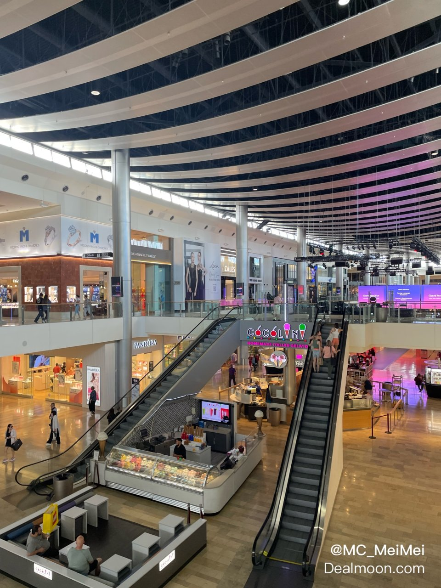
Executive Hotel Le Soleil New York（纽约勒苏蕾行政酒店）靠近 Madison Square Garden（麦迪逊广场花园）。三晚不换位置，10月13日傍晚再去 John F. Kennedy International Airport（JFK，纽约肯尼迪国际机场）附近。
18:12到 John F. Kennedy International Airport（JFK，纽约肯尼迪国际机场）。默认乘 AirTrain（机场捷运）到 Jamaica Station（牙买加站），转 LIRR（长岛铁路）到 Penn Station（宾夕法尼亚车站），再乘短途黄色出租车到 Executive Hotel Le Soleil New York（纽约勒苏蕾行政酒店）。两人约38—45美元，正常20:15—21:00入住。
当晚只吃简餐，不安排 Times Square（时代广场）。采购：Whole Foods Market Bryant Park（全食超市布莱恩特公园店），1095 Sixth Avenue（第六大道1095号），约07:00—22:00；21:00后不专程前往，改到第二天购买。
帝国大厦只拍外观；纪念广场当天不进馆。
New York Stock Exchange（纽约证券交易所）、Charging Bull（华尔街铜牛）、Battery Park（炮台公园）；乘 Staten Island Ferry（史泰登岛渡轮）往返看 Statue of Liberty（自由女神像），回程后在 Stone Street（石街）午餐。
曼哈顿大桥机位、旋转木马、河岸；16:45轻食休息，17:30开始过桥、19:00前结束；20:00卡萨莫诺晚餐（待预约），21:30后打车回酒店。
Bow Bridge（弓桥）、Bethesda Terrace（贝塞斯达露台）、The Mall（林荫大道）和 Gapstow Bridge（加普斯托桥）。
Apple Fifth Avenue（苹果第五大道店）、The Tiffany Landmark（蒂芙尼地标旗舰店）、St. Patrick's Cathedral（圣帕特里克大教堂）、Rockefeller Center（洛克菲勒中心）、Grand Central Terminal（中央车站）、New York Public Library（纽约公共图书馆）、Bryant Park（布莱恩特公园）和 Times Square（时代广场）。购物只进两家。
补妆并确认电子票；不带大包。
Minnesota Timberwolves（明尼苏达森林狼）对 New York Knicks（纽约尼克斯）季前赛。酒店步行约10分钟。
你截图中的弹窗是停车通行证加购，不是比赛门票附带内容。纽约市区不租车，不需要购买。
比赛前48小时确认电子票已转入官方账号或手机钱包；不要只保留订单截图。
08:45退房寄存行李；09:20 Vessel（维塞尔）和 The Shops at Hudson Yards（哈德逊城市广场购物中心）；09:50—11:30 The High Line（高线公园）；11:30—13:15 Chelsea Market（切尔西市场）与 Artists & Fleas（艺术家与跳蚤市集）；13:20—16:00 Little Island（小岛公园）与 Meatpacking District（肉库区）；16:00打车回酒店；17:00取行李后直接打车去JFK机场酒店。
西侧景点之间步行，不坐地铁；预计18:30—19:30入住机场酒店。购物只放在前半天的顺路位置，不延后16:00离场时间。
10月11日下城与布鲁克林：Empire State Building（帝国大厦）外观、The Oculus（世贸中心交通枢纽）、9/11 Memorial（九一一纪念广场）、Wall Street（华尔街）、Charging Bull（华尔街铜牛）、Battery Park（炮台公园）、Statue of Liberty（自由女神像）远观、DUMBO（丹波区）、Brooklyn Bridge（布鲁克林大桥）。
10月12日中央公园与中城：Central Park（中央公园）、Fifth Avenue（第五大道）、St. Patrick's Cathedral（圣帕特里克大教堂）、Rockefeller Center（洛克菲勒中心）、Grand Central Terminal（中央车站）、New York Public Library（纽约公共图书馆）、Bryant Park（布莱恩特公园）、Times Square（时代广场）、Madison Square Garden（麦迪逊广场花园）。
10月13日西侧：Vessel（维塞尔）、Hudson Yards（哈德逊城市广场）、The High Line（高线公园）、Chelsea Market（切尔西市场）、Little Island（小岛公园）、Meatpacking District（肉库区）。
没有强塞：Metropolitan Museum of Art（大都会艺术博物馆）、SoHo（苏豪区）和登顶观景台需要各增加2—4小时，本版不占用比赛与机场转场。
10月12日 Fifth Avenue（第五大道）：The Tiffany Landmark（蒂芙尼地标旗舰店）、Nike House of Innovation NYC（耐克纽约创新旗舰店）、MoMA Design Store（纽约现代艺术博物馆设计商店）中选两家；New York Knicks Team Store（纽约尼克斯球队商店）在比赛前看球衣和城市限定商品。
10月13日 Hudson Yards（哈德逊城市广场）：Alo Yoga（阿洛瑜伽）、Aritzia（阿里齐亚）、Lululemon（露露乐蒙）中选一家，最多30分钟。Chelsea Market（切尔西市场）：Artists & Fleas（艺术家与跳蚤市集）适合买小件设计品。纽约购物不提供游客退税，先比较国内价格。
若住 TWA Hotel（环球航空酒店），02:45起床，03:20出门；若住机场外酒店，02:30起床，按接驳班次提前。目标03:30到国际航站楼。
早餐在10月13日下午先买好。固体食品可随身，饮料需过安检后购买。
10月3日安排 Kali Restaurant（卡利餐厅），10月11日20:00安排 Casa Mono（卡萨莫诺），均需订位。New York City（纽约）10月13日不安排预约制午餐，给机场转场保留时间。
DUMBO（丹波区）下午人多，先确定单人构图，再等10—20秒的人流空隙。
以下为两位成人的常用做法，不是法律要求。餐厅和网约车用刷卡或应用支付；酒店、向导和接驳车准备小额现金。
出现 Gratuity Included（小费已包含）或 Automatic Gratuity（自动小费）时不再追加。只写 Service Charge（服务费）或 Hospitality Charge（服务费）时，先问 “Is gratuity included in the service charge?（服务费是否已经包含小费？）”。Resort Fee（度假村费）、Destination Fee（目的地服务费）、税费和停车费都不是小费。
建议准备约180美元小额现金：1美元30张、5美元20张、10美元3张、20美元1张。两人分开放；没有发生服务就不必花完。
餐厅和网约车直接在卡单或应用内给，现金主要用于客房、行李、接驳车和向导。
金额均为两人合计，除非明确写“每人”。
| 日期 | 会遇到的服务 | 建议金额 | 不用给或避免重复 |
|---|---|---|---|
| 9月29日 San Francisco（旧金山） | 机场取车、酒店寄存、两段网约车、简餐 | 网约车各按15%，短程最低3美元；酒店行李员搬箱按每件2美元、最低5美元；正餐20% | Avis（安飞士租车）柜台、AirTrain（机场轻轨）、自助停车、缆车和柜台简餐不用给 |
| 9月30日 硅谷与 Cambria（坎布里亚） | Queen Anne Hotel（安妮女王酒店）客房、酒店早餐、午餐、El Colibri Hotel & Spa（雅黛科乐比酒店及水疗中心） | 退房前客房留5美元；有服务员的午餐20%；两家酒店若有人搬箱，每件2美元、最低5美元 | 免费欧陆早餐无桌边服务可不给，员工清理并提供服务可留2美元；校园、苹果游客中心、停车场和咖啡柜台不用给 |
| 10月1日 Santa Barbara（圣塔芭芭拉）与 Los Angeles（洛杉矶） | 坎布里亚客房、Boathouse at Hendry's Beach（亨德里海滩船屋餐厅）、还车后网约车、洛伊斯行李员 | 客房5美元；船屋餐厅按税前20%，税前80美元即16美元；网约车15%、最低3美元；搬箱每件2美元、最低5美元 | 海滩停车和 Avis（安飞士租车）还车人员不用给；餐厅账单已含小费则不重复 |
| 10月2日 Universal Studios Hollywood（好莱坞环球影城） | 洛伊斯客房、园区餐饮 | 客房5美元；桌边餐厅20%；酒吧每杯2美元或整单20% | 地铁、免费接驳车、游乐项目、商店和柜台快餐不用给 |
| 10月3日 洛杉矶城市日 | 洛伊斯客房、多段网约车、农夫市集、Kali Restaurant（卡利餐厅） | 客房5美元；每段网约车15%、短程最低3美元；卡利餐厅税前20% | 农夫市集柜台0—2美元；卡利餐厅若已经加入小费或明确写小费已包含，不重复填写 |
| 10月4日 Disneyland Resort（迪士尼度假区） | 洛伊斯客房、往返 Anaheim（安纳海姆）的长途网约车、园区餐饮 | 客房5美元；网约车15%，司机搬大箱才额外考虑；桌边餐厅20% | 迪士尼演职人员、项目、商店和柜台快餐不用给 |
| 10月5日 洛杉矶购物与海边 | 洛伊斯客房、多段网约车、午晚餐或酒吧 | 客房5美元；网约车15%、短程最低3美元；正餐20%；酒吧每杯2美元 | 零售店、商场、码头和咖啡外带不用给 |
| 10月6日 洛杉矶飞 Las Vegas（拉斯维加斯） | 洛伊斯退房、去机场网约车、机场行李服务、拉斯维加斯网约车、Flamingo（弗拉明戈）行李员 | 洛伊斯客房5美元；网约车各15%；若使用路边行李托运，每件2美元；Flamingo（弗拉明戈）搬箱每件2美元、最低5美元 | 航空柜台、安检和机组人员不用给；自己搬箱不用给行李费之外的小费 |
| 10月7日 Lower Antelope Canyon（下羚羊谷）一日团 | Flamingo（弗拉明戈）客房、一日团司机或领队、羚羊谷纳瓦霍向导、途中餐饮 | 客房5美元；全日司机或领队每人20美元、两人40美元；峡谷当地向导每人5—10美元，主动帮助拍照可取上限；正餐20% | 先看团费是否已经包含 gratuity（小费）；若司机兼领队只给一份，不拆成两份 |
| 10月8日 巨型球、换酒店与《O》 | 弗拉明戈客房、行李寄存与取回、换酒店、餐厅、网约车 | 客房5美元；行李每件2美元、每次服务最低5美元；网约车15%；桌边餐厅税前20% | 巨型球及《O》检票、引座不用给；无射击服务，不预算射击小费 |
| 10月9日 购物与休闲 | 枫丹白露客房、网约车、餐厅；射击仅备选 | 客房5美元；网约车15%；桌边餐厅20%。若选射击，安全员可给两人合计10—20美元，接送司机5—10美元 | 零售店不用给；柜台自取可选0；射击小费已含可选体验预算，不重复加 |
| 10月10日 拉斯维加斯飞 New York City（纽约市） | 枫丹白露退房、行李员、机场网约车、纽约末段出租车或网约车、纽约酒店行李员 | 客房5美元；搬箱每件2美元、最低5美元；网约车15%；纽约出租车15—20%、最低3美元 | 航空公司、AirTrain JFK（肯尼迪机场轻轨）和 LIRR（长岛铁路）不用给 |
| 10月11日 Central Park（中央公园）、The Met（大都会艺术博物馆）与剧院 | 纽约酒店客房、Casa Mono（卡萨莫诺）已订午餐、网约车、演出后简餐 | 客房5美元；卡萨莫诺税前18%–20%且小费另列人民币180–260元；网约车15%、短程最低3美元 | 公园、博物馆检票和柜台餐食无需强制给小费 |
| 10月12日 Lower Manhattan（曼哈顿下城）、DUMBO（丹波区）与篮球赛 | 纽约酒店客房、石街简餐、赛前简餐、Madison Square Garden（麦迪逊广场花园）餐饮 | 客房5美元；有桌边服务的正餐税前18%–20%；球场酒吧每杯2美元或整单20% | 两段渡轮、地铁、比赛检票和柜台食品不用给 |
| 10月13日 Manhattan（曼哈顿）到机场酒店 | 纽约酒店客房与寄存、Chelsea Market（切尔西市场）、去机场出租车、机场酒店接驳 | 客房5美元；行李取回时每件2美元、最低5美元；出租车20%；接驳司机每人2美元或每件行李1—2美元，两人给5美元即可 | 切尔西市场柜台0—2美元；已经付固定车费仍按车费给出租车小费，但不对过路费和税费重复计算 |
| 10月14日 返程 | 机场酒店客房、凌晨接驳 | 离房前留5美元；接驳司机两人5美元，尤其是帮助搬箱时 | 机场值机、安检和机组人员不用给 |
本行程最容易多给或漏给的部分。
采用行业和礼仪机构给出的常用区间，再按本行程取容易执行的中间值。
价格与营业时间为2026年9月20日搜索快照。支付前再核对。
取车：9月29日12:00，San Francisco International Airport Rental Car Center（旧金山国际机场租车中心）。
还车：10月1日16:30前，Avis Car Rental – Hollywood（安飞士租车好莱坞门店），1333 North Highland Avenue（北高地大道1333号，门店代码Z9U）。
已报租车费用：人民币1,977元，按已购订单核对车型组、保险、异地还车费和附加驾驶员，不再使用旧基础租金估价。
电动车：车型只保证级别，不保证一定是特斯拉；Avis（安飞士租车）要求还车电量至少70%，低于70%通常收35美元补能费，低于10%再加35美元。
保险：核对碰撞损失豁免、第三者责任、道路救援和异地还车费；不要只看基础日租。
营业时间来自官方门店页；Z9U是本行程默认选择。
| 门店 | 10月1日周四营业时间 | 距酒店 | 结论 |
|---|---|---|---|
| Avis at Loews Hollywood Hotel（安飞士洛伊斯好莱坞酒店店，AVHL1） | 09:00—12:00、13:00—15:00 | 酒店大堂 | 关门太早，不选 |
| Avis Car Rental – Hollywood（安飞士租车好莱坞门店，Z9U） 1333 North Highland Avenue（北高地大道1333号） | 08:00—17:00；官方要求营业时间内还车 | 约1.3公里；网约车约5—10分钟 | 默认选择；15:35到店，16:15前完成交车 |
| Avis at Hollywood Burbank Airport（安飞士好莱坞伯班克机场店，BUR） | 05:30—23:00；支持24小时钥匙箱 | 约11公里；晚间网约车预留20—35分钟 | 只有计划17:00后还车时改选 |
两段都选白天直飞，避免红眼航班。
| 日期 | 航班选择 | 衔接 | 当前价格 | 备选 |
|---|---|---|---|---|
| 10月6日 | Southwest Airlines（西南航空）12:10—13:20 Hollywood Burbank Airport（BUR，好莱坞伯班克机场）→ Harry Reid International Airport（LAS，哈里·里德国际机场） | 09:20离开 Loews Hollywood Hotel（洛伊斯好莱坞酒店） 09:50—10:10到机场 | 两人实付人民币2,228元 托运行李另核对 | 已购，不再安排备选航班 |
| 10月10日 | Delta Air Lines（达美航空）09:59—18:12 Harry Reid International Airport（LAS，哈里·里德国际机场）→ John F. Kennedy International Airport（JFK，纽约肯尼迪国际机场） | 06:45离开 Fontainebleau Las Vegas（拉斯维加斯枫丹白露酒店） 07:10—07:30到机场 | 两人实付人民币3,088元 托运行李另计 | 已购，不再安排备选航班 |
按酒店位置选择。晚间以网约车和主路为主。
| 住宿 | 商店 | 营业时间快照 | 采购时间 | 建议购买 |
|---|---|---|---|---|
| Queen Anne Hotel（安妮女王酒店） | 酒店欧陆早餐 | 公开时段约07:00—09:30；入住时确认 | 9月30日07:30 | 07:30吃早餐，07:45出发；若服务未开始用备用面包 |
| El Colibri Hotel & Spa（雅黛科乐比酒店及水疗中心） | Cookie Crock Market（曲奇克罗克市场） 1240 Knollwood Drive（诺尔伍德路1240号） | 周一至周六约07:00—21:00 | 9月30日20:15晚餐后，20:30前到；或下午休息站先买常温食品 | 三明治、咖啡、水果 |
| Loews Hollywood Hotel（洛伊斯好莱坞酒店） | Trader Joe's（乔氏超市） 1600 North Vine Street（北藤街1600号） | 约09:00—21:00 | 10月1日19:00前后，网约车往返 | 贝果、奶酪、酸奶、零食 |
| Flamingo Las Vegas Hotel & Casino（弗拉明戈拉斯维加斯酒店） | Walgreens（沃尔格林药房） 3397 South Las Vegas Boulevard（南拉斯维加斯大道3397号） | 以当天门店信息为准 | 10月6日等待入住时顺路买好；晚上不专程跑远 | 羚羊谷早餐、水、能量棒；不深夜单独采购 |
| Fontainebleau Las Vegas（拉斯维加斯枫丹白露酒店） | Walgreens（沃尔格林药房） 3025 South Las Vegas Boulevard（南拉斯维加斯大道3025号） | 24小时 | 10月9日18:00前 | 次日机场早餐、水 |
| Executive Hotel Le Soleil New York（纽约勒苏蕾行政酒店） | Whole Foods Market Bryant Park（全食超市布莱恩特公园店） 1095 Sixth Avenue（第六大道1095号） | 约07:00—22:00 | 每天19:00前；10月13日买返程早餐 | 水果、沙拉、烘焙食品 |
看税后总价和行李额。美国一般没有游客增值税退税。
以下金额为每人预算，按1美元约6.7元换算；实际看税后结账价。
| 时间与店 | 买什么 | 控制点 |
|---|---|---|
| 9月29日 · Ferry Building Marketplace（渡轮大楼市集） | Dandelion Chocolate（蒲公英巧克力）或 Book Passage（书途书店）只挑1—2件明信片、薄本或小包装；给自己留旧金山纪念。 | 落地日不买易碎陶瓷或多盒食品；后面还要租车、坐两段国内航班。 |
| 10月4—5日 · Disneyland Park（迪士尼乐园主园）与 Los Angeles（洛杉矶）购物日 | 园区只买有纪念意义的徽章、小挂件；服饰先试穿、拍标签及税后价，能确定尺码再买。 | 主题乐园不背购物袋玩全天；大件留到10月5日专门购物时决定。 |
| 10月9日 · Las Vegas（拉斯维加斯）购物日 | 若折扣确实合适，再集中买鞋服、钱包、轻薄围巾等给家人；先算鞋盒和包装体积。 | 当晚称两只箱；10月10日还有 Delta Air Lines（达美航空）美国国内航段，超重费与新增托运费以已购票种为准。 |
| 10月13日 · Trader Joe's Chelsea（乔氏超市切尔西店，675 6th Ave） | 最后买给同事分发的密封独立包装糖果、巧克力或轻便帆布袋；可从 Chelsea Market（切尔西市场）或 High Line（高线公园）后顺路进店。 | 买完直接叫车回 Executive Hotel Le Soleil New York（纽约勒苏蕾行政酒店）取箱，不提袋继续逛；留足约45分钟重装、称重。 |
| 对象 | 参考选择 | 每人预算 | 重量控制 |
|---|---|---|---|
| 爷爷奶奶 | 薄围巾、帽子或轻便小皮件；若想送食品，先确认饮食限制。不默认买保健品或药品。 | ¥100—300 | 每人约200—400克；避免玻璃罐和重盒礼品。 |
| 父母及亲近家人 | 美国品牌折扣小皮件、T恤/帽子，或一件园区限定小物；按个人喜好选，不为凑数买。 | ¥200—600 | 每人约300—700克；鞋盒若占空间可平放或弃盒。 |
| 同事 | Trader Joe's（乔氏超市）独立包装糖果或小零食；若需要非食品，选明信片或小磁贴。 | ¥20—60 | 先按人数合计，整组礼物尽量控制在约1公斤内。 |
出发前在 Southwest Airlines（西南航空）、Delta Air Lines（达美航空）和返程国际机票订单中核对各自免费托运件数、单件重量和随身行李规则；以最严格的一段制定上限，每箱留至少2公斤余量。10月9日晚、10月13日下午各称重一次。充电宝只能放随身行李；密封固体巧克力可按美国安检规则随身或托运，但带回中国仍须遵守中国海关检疫与申报规定，不带鲜果、肉制品。西南航空行李费 · 达美航空行李规则 · 美国安检固体巧克力规则 · 中国海关进境检疫。
这些规则比“记住所有街区”更有效。
官方信息用于营业时间、门店和项目归属；价格来自当日搜索快照。